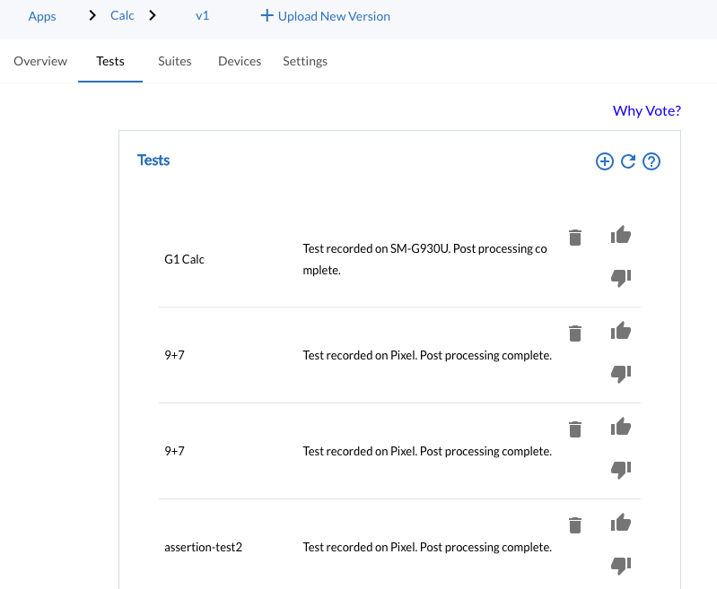
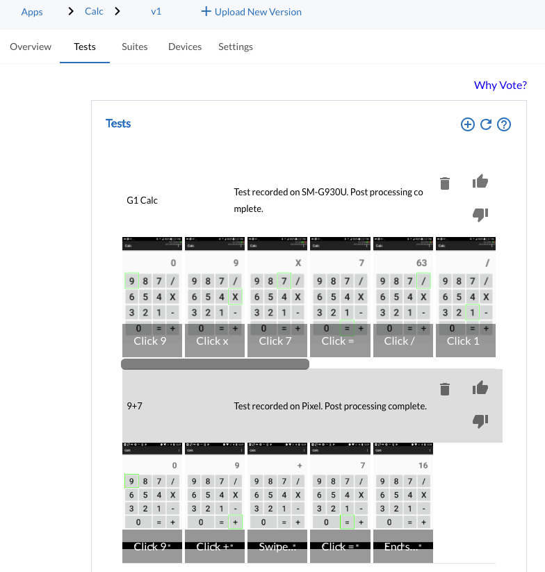

View recorded Tests
View recorded test cases⚓
Navigate to Tests page. This page provides an overview of all the tests that have been recorded with the MoQuality Recorder. A test consist of a series of actions performed on an app on a device. It is displayed as a series of screenshot and a marked area indicating the action widget. The following page display all the recorded tests with MoQuality Recorder.

By clicking on an individual test, you can see the screenshots of the test.
